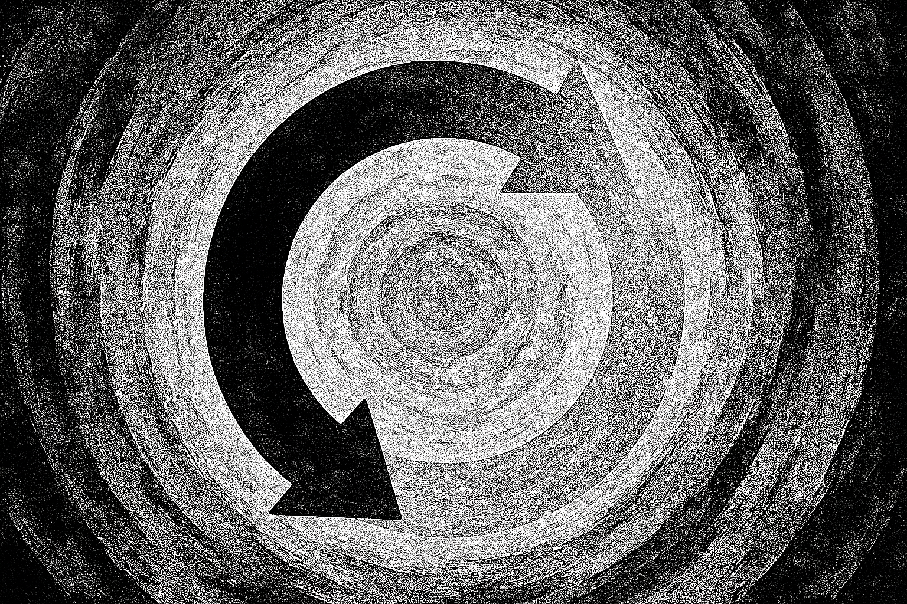

Revo
Aleksandar Gazibara

Darko i Goran
Bliski prijatelji praktično od rođenja. Majke su im bile prijateljice iz srednjoškolskih dana. Upoznali su se kao bebe. Oduvek su znali jedan za drugog. Isti vrtić, ista grupa, ista škola, isto odeljenje. Nerazdvojni.Omiljeni u komšiluku. Deca za primer.
Izabrali su čak i istu gimnaziju, mada tada nisu bili u istim odeljenjima, zbog različitih smerova. Darko je oduvek bio društvenjak, a Goran prirodnjak, naklonjen najviše matematici.
Za vreme fakulteta su se delimično udaljili, različita društva, različita interesovanja, ali sada u svojim tridesetim, kada je život počeo da ulazi ponovo u neku prepoznatljivu rutinu, druženje je opet postalo intenzivno. Darko je bio veren, Goran još uvek sam, ali su obojica verovali da će se jednog dana njihove buduće porodice upoznati i zbližiti.
Nisu mogli ni da zamisle da će jednog dana taj dvojac nestati.
Pecanje
Darko je bio pasionirani ribolovac, najčešće na Dunavu. Imao je svoj čamac i dovoljno opreme za obojicu. Goran nije bio naročito impresioniran tim hobijem, ali kada ga je prijatelj pozvao da veče provedu na reci, pristao je.Pecali su tokom celog poslepodneva, uz gutljaje piva i prebirajući po epizodama iz mladosti. Na reku se spustio mrak, a dvojica prijatelja dogovorila su se da uskoro krenu nazad.
– A šta se desilo sa Tanjom na kraju? – upita Goran, pomalo zaplićući jezikom dok je dovršavao još jednu limenku.
– Ah, da… Tanja, lepotica. Svi smo bili ludi za njom, zar ne?
– Ne znam… Ja sam imao utisak da sam bio jedini. Imali smo neke zanimljive razgovore, mislio sam da će to da se razvije, ali…
– Da, motali su se oko nje razni likovi – reče Darko i spotaknu se o kabl za gorivo.
– Mislim da se nikad nisam do kraja oporavio od te epizode. Često mislim na nju i danas. Ali, ti nisi imao ništa s njom? – upita Goran, podižući oprezno pogled ka prijatelju.
Darko je nekoliko trenutaka ostao nem, kao da prebira po mogućim odgovorima.
Potom baci pogled na telefon, ne dajući ideju o tome šta drugo da uradi.
Kada je podigao glavu, barža je već bila preblizu — potpuno neočekivano i nezadrživo, promolivši pramac iz tame.
Obojica su je pogledala istovremeno. Darko opsova i pokuša da okrene čamac udesno, dalje od te pomahnitale zveri.
Goran je ostao skamenjen. Darko ču prolamajući zvuk pucanja i izgubi svest.
Kasnije će se iznova i iznova pitati – da li je mogao da uradi nešto drugačije.
Bolnica
– Darko… hvala Bogu – izusti Milica, stegavši ga u snažan, nekontrolisan zagrljaj.Sestra priđe istog trenutka i reče:
– Gospođice, molim vas, pomerite se, pacijent nema dovoljno prostora. Dajte mu trenutak da dođe sebi.
Darko pogleda oko sebe, oseti braunilu i cevčicu u nosu. Ugleda prvo sestru i doktora. Usta im se pomeraju, ali ne razaznaje o čemu pričaju. Oseti parališući bol u glavi na trenutak, nakon čega ugleda konačno i Milicu. Pokuša da zausti:
– Mico… – izgovori s velikim naporom – gde je Goran?
Milica spusti glavu, a suze joj potekoše bez kontrole.
– Molim te, reci mi.
– Goran je stradao, ljubavi – reče Milica nakon što je nekoliko puta duboko udahnula.
Nemirenje
Darko je uspeo da shvati da je od svega prošlo tek nekoliko sati. Ostao je budan celu noć. Fenomen krivice onoga ko je preživeo mu je bio poznat – osetio ga je kada je, kao mlađi, izgubio bliskog rođaka.Tada je mislio kako bi učinio sve da može da ga vrati, makar to značilo i da zamene uloge. Video je količinu patnje koju je to izazvalo u porodici i pokušao je na taj način da se uteši, iako mu je bilo jasno koliko je to zapravo detinjasto.
Milica je, znajući ga, ponela i njegov kompjuter i ostavila mu ga pored kreveta. Iako je inače bio protiv toga, sada je kopao duboko po dark webu ne bi li pronašao bilo kakvo rešenje.
Ni sam nije znao šta tačno traži. Prijatelj mu je bio proglašen mrtvim. Ali, u Darkovoj prirodi nije postojalo odustajanje. Zapravo, povlačenje mu nikada nije bilo opcija, ni pod kojim okolnostima.
Nagledao se raznih šaljivih, bizarnih, pa i morbidnih postova, a u celoj toj gomili informacija kroz koju je sekao kao nožem, jedan post mu privuče pažnju:
Vraćam iz mrtvih – alat nosim sa sobom.
O Bože, kakva budalaština, pomisli… ali ipak kliknu na link.
Poruka
/dev/lucijan — private drop
[L] Aha! Uhvatio sam ti pažnju. Statistički, manje od 1% ljudi klikne. Ti si kliknuo.
Imaš problem?
Neko do koga ti je stalo je umro? Nedavno?
Želiš da ga vratiš? Da li ti pogađam misli?
Ako je telo očuvano i prošlo je manje od 48 sati, možda mogu da ti pomognem.
Ali pazi… ti odlaziš. To je cena.
A platićeš i proceduru.
Piši na lucijan.d@gmail.com.
Zapamti: manje od 48 sati.
Kontakt
Logistika je bila paklena, ali Lucijan je obećao da se za dovoljno novca sve može rešiti.Telo je trebalo krišom da bude odneto iz mrtvačnice u što kraćem roku i, bez traga, dopremljeno na adresu “ordinacije” – iako je prostor ličio na sve drugo pre nego na ordinaciju.
Lucijanova komunikacija bila je štura i direktna:
Pošaljite novac na ovaj račun: RS35 2600 0001 4529 7831 12 Nakon uplate, dobićete adresu i sve ostale podatke. Telo vas čeka tamo. Procedura traje manje od 10 minuta. Tolerancija kašnjenja: 5 minuta. Posle toga me više nećete naći, a telo nestaje – zauvek. — L.
Procedura
Nagli letnji pljusak zalivao je gradske ulice. Darko se s mukom probio do naznačenog mesta. Bio je ubeđen da je na pravoj adresi, ali ispred njega se pružao uski prolaz, vlažan i memljiv, po kom je tukla kiša.Uočio je odsjaj ulične rasvete u baricama koje su se formirale u raspuklinama kamenih ploča.
Šta ja to radim? – pomislio je i zastao na tren. Ali onda se prenuo, osetivši kao da ga je nešto gurnulo, i nastavio dalje kroz mrak.
Vrata su bila neugledna, iscrtana grafitima, a njihova izlizana boja se ljuštila u tankim ljuskama. Ništa na njima nije ukazivalo da se iza krije bilo šta osim prašnjavog hodnika… i ipak ga je stezalo u grudima.
Pokucao je, iako je znao da je to zapravo besmisleno. Posle nekoliko trenutaka, vrata kao da su se sama otvorila. Kročio je u hodnik, uzak, mračan i mnogo duži nego što je očekivao. Opet su ga obuzele crne misli.
Konačno je stigao do nečega što je podsećalo na ulazna vrata. Neobeležena, crna. Krajičkom oka spazio je simbole urezane u donjem desnom uglu — krivudave linije i znakove koji su mu bili nepoznati.
Na kameri iznad vrata zatreperila je diodica. Brava je škljocnula, a vrata su se sama otvorila.
Istog trenutka zapahnuo ga je oštar miris paljevine, onaj težak, gorak miris poput izgorelog baruta.
— Uđite.
Kročio je u prostoriju u kojoj su retke LED svetiljke bacale oštre krugove svetla, dok je ostatak ostajao u gustoj, nepomičnoj tami.
Tek tada je začuo ritmično pištanje i tiho brujanje aparata — zvuke koji prate vitalne znakove. Nekoliko monitora, EEG, nepoznati instrumenti… zvučalo je skoro kao bolnica.
Onda, u polumraku, razabra dva uska kreveta. Na jednom od njih ležalo je nešto nalik telu, prekriveno čaršavom. Ugrizao se za usnu, ne usuđujući se da proveri.
— Da, to je vaš prijatelj. Sumnjali ste? — reče dubokim, sporim glasom prilika koja je izvirila iz tame. Visok, dugih udova, sede kose vezane u rep, izboranog lica i prodornih plavih očiju.
— Ne, ali… sve ovo je…
— Razumem. Sedite, odmorite se trenutak. Sve je to normalno.
— U redu.
Miris paljevine i dalje mu je grebao nozdrve. Gledao je Goranovo telo, dok mu se u grudima budio onaj isti, teški talas krivice. Potiskivao ga je mišlju da će uskoro sve biti rešeno.
Istovremeno se pitao da li je potpuno sišao s uma, sve svesniji bizarnosti i apsurda u kojem se našao. Ali znao je — izbora više nema.
Možda će me jednostavno ubiti i nestati… ko mi uopšte može garantovati bilo šta?
Na novac nije ni pomišljao. Bila je to njegova celokupna ušteđevina, gotovo do poslednjeg dinara — još jedan u nizu bizarnih detalja kojima ranije nije pridavao značaj. Ali sada, tik pred proceduru, sve mu se kristalisalo: koliko je zapravo sve nejasno, neizvesno… i opasno.
— Raskomotite se sada i lezite. Skinućete košulju, gornji deo tela mora da bude slobodan.
Darko klimnu, iako je osećao kako mu se stomak grči.
— Dobro — promrmlja, skidajući košulju i spuštajući se na hladnu posteljinu. Legao je, pogledao nadesno, u obrise svog prijatelja, i pomislio: Ovo je za tebe, nadam se da će uspeti.
Lucijan je rutinski kačio senzore, pokretima koji su odavali naviku i iskustvo. Ta profesionalna hladnoća ulivala je Darku taman dovoljno poverenja da ne odustane.
— Da ne zaboravim, ovo jeste eksperimentalna procedura, alternativna, neregulisana zakonom, da ne kažem nešto grublje — reče Lucijan i pomalo se nasmeja. — Ali ipak mi je potreban vaš potpis na ovom našem malom ugovoru.
Darko s nevericom pogleda u papir s gustim tekstom, koji nikako nije mogao da razazna u ovim uslovima. Uze olovku i brzo potpisa.
— E, pa to je rešeno. Opustite se, brzo ćemo.
Tek tada je brzim pokretom otkrio Gorana. Darku zastade dah od prizora. To je bio Goran, ali sada već pomalo plav, zatvorenih očiju, beo. I nepomičan.
— Vaš prijatelj se uskoro vraća zahvaljujući vama.
— Da… — jedva izusti.
— Možemo da počnemo. Kao što sam vam već rekao, ovo će trajati nešto manje od desetak minuta, ali vi ćete zaspati skoro trenutno. Da li ste spremni?
Darko je ćutao. Iznenadio je i sebe ovom reakcijom. Hteo je da progovori, ali…
— Da li ste spremni? — reče Lucijan sada značajno strožije.
— Mislim da jesam — reče Darko.
— U redu, krećemo. Zapamtite, vi ovo radite za svog prijatelja, koji se danas vraća svojoj porodici. To je plemenito — reče Lucijan i kao da se nasmeja sam sebi u bradu.
— Spreman sam — reče sada odlučno Darko i oseti istovremeno blagi ubod u venu i kako mu svest trne. Pogledao je u Gorana, čije se telo nevoljno trgnulo, a oči zatreperile… u poslednjim iskrama svesti Darko oseti iskonsko olakšanje — sav teret krivice je u trenu nestao — i on se konačno i potpuno predade.
Vest
Beograd — Goran D. (34), koji je stradao u nesreći na Dunavu, probudio se nakon 48 sati provedenih u komi.Lekari kažu da, iako deluje kao čudo, ovakvi oporavci nisu nemogući. Prema rečima lekara, Goran D. se ne seća događaja.
U jednoj međunarodnoj studiji na više od 500 pacijenata, oko 10 odsto se probudilo tek nakon 48 sati, a čak tri četvrtine njih bez većih posledica po zdravlje.
Goran će, prema rečima lekara, biti otpušten iz bolnice u narednim danima, a zasad deluje da je prošao bez trajnih oštećenja.
Povratak
Goranu je trebalo još dve nedelje da se potpuno oporavi. Probuđen u skučenom prostoru mrtvačnice, nije odmah shvatio šta se dogodilo.Ubrzo je prebačen na intenzivnu negu, ali vest koja je do njega stigla nekoliko dana kasnije pogodila ga je jače od svega — Darko je nestao bez traga.
To ga je proganjalo. Zamalo je izgubio život, a izgleda da je izgubio i jedinog pravog prijatelja. Povratak kući nije značio mnogo; tamo ga nije čekala porodica, samo tišina stana.
U tim trenucima preispitivanja shvatio je da njegov život odavno nije ono što je želeo. Možda je upravo ovo bilo sudbinsko guranje ka nečemu novom.
Preko prijatelja je došao do Tanjinog broja i odlučio da je pozove čim izađe iz bolnice.
← Nazad na početnu